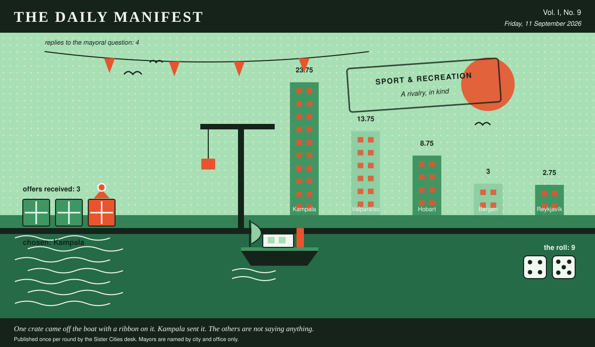

The Daily Manifest
All the news that fits in the hold.
Vol. I, No. 9 · Friday, 11 September 2026 · Price: unchanged since the first edition, which was also this week
Weather: unsettled, like the minutes of the last session.
Published once per round by the Sister Cities desk. Mayors are named by city and office only.

Wanted
One city wants something. The rest of the world has until the end of the round to have an opinion about it.
Prizes for a fête, and nothing sensible
PUBLIC NOTICE from Kampala, paid for in goodwill and one packet of biscuits, and printed here at length because the paper had the room.
Kampala's summer fête has eleven stalls and a prize table currently holding a tin of peaches. Wanted: prizes -- plastic, gaudy, faintly baffling -- five hundred of them, plus one single prize so good that grown adults will queue in the rain for a raffle ticket.
The Mayor of Kampala would like an answer to this: Send Kampala five hundred small gaudy prizes and one absurdly good one, and say which is which.
The rules, as ever: one offer per city, anything at all, in by 12 September, 09:00 UTC, and nobody's name on anything.
Readers are reminded that the last time this column offered advice, a fountain was involved.
Sealed Bids
4 sealed offers, one desk, and the Mayor of Valparaíso sitting behind the lot of it.
Which city sent which offer is not printed here, is not known to the Mayor of Valparaíso, and will not be known to anybody at all except in the one case where an offer wins.
The Mayor of Valparaíso has until the end of this round to choose. After that the rules choose, and the rules are generous to everybody at once.
Arrivals
Chosen.
The winning offer for Hobart, reproduced exactly as it arrived:
Roast maize, chapati and a spice mix in unlabelled bags, because labels slow everything down.
It came from Kampala, which takes 9 on the roll (4 and 5).
Also offered, and declined:
- Seven brass instruments, tuned, and a procession route we are prepared to lend.
- A crate of paperbacks about weather, read to destruction over one long winter.
Those arrived unsigned and will stay that way. A losing offer's city is nobody's business, permanently.
The Wire
Correspondence from the mayors, counted before it was quoted.
The world, awake
The question, put to all of them and answered by rather fewer: “Longest you have ever gone without sleep — and what were you doing?”
Every nation on record: looking after somebody.
4 of 5 city halls wrote back. 4 of those said looking after somebody.
The paper would like it noted that it asked a simple question.
The Ledger
Cumulative profit by city, as recorded by this paper's accountants, who are volunteers and say so often.
| # | City | Profit |
|---|---|---|
| 1 | Kampala | 28.75 |
| 2 | Hobart | 8.75 |
| 3 | Valparaíso | 8.75 |
| 4 | Reykjavík | 5.75 |
| 5 | Bergen | 0 |
Kampala holds the head of the table this round. Tables turn; that is largely what they are for.
A city on zero is still a city. The column includes everybody, which is the point of a column.
Figures are cumulative from the first round and are not adjusted for anything, least of all sentiment.
Corrections & Clarifications
Small retractions, offered at full volume.
- The Wire item above rests on 4 replies out of 5 city halls. The paper prefers to say so in two places than in none.
- The masthead reads Vol. I, No. 9. There has never been a Vol. II and there is no plan for one.
The Daily Manifest. Round 9. Offers for the current notice close 12 September, 09:00 UTC.